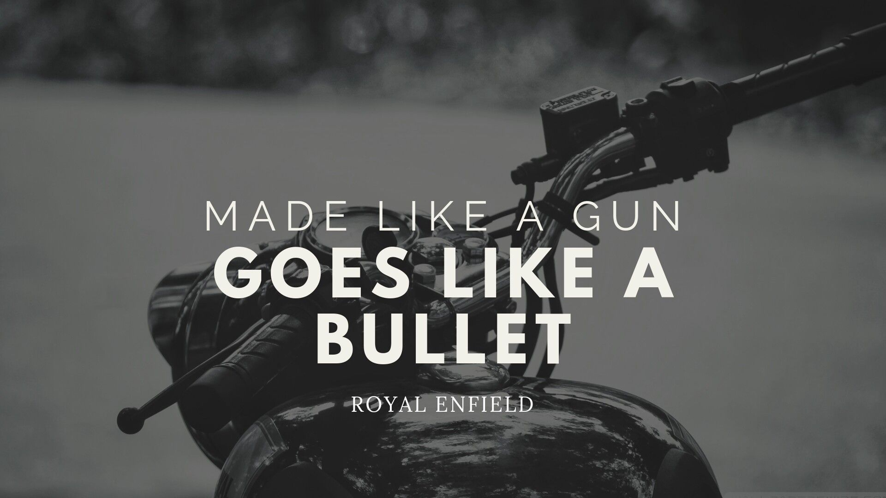
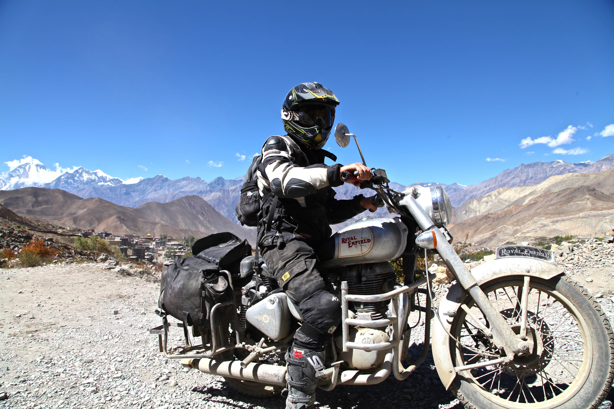
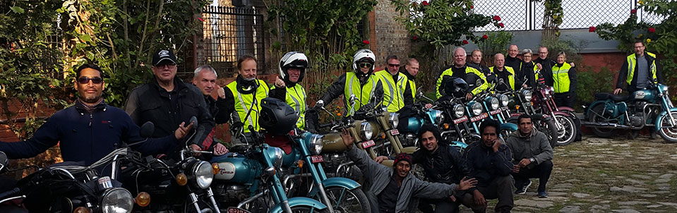
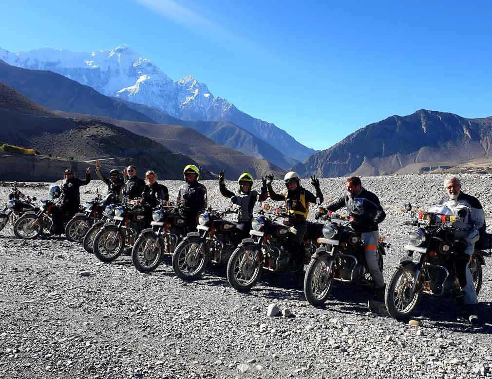
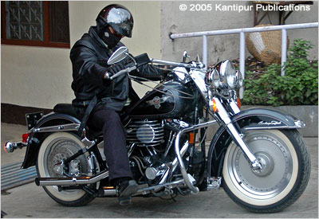

Welcome to Classic Motorcycles Nepal
Classic bikes hold a special place in Nepal's vibrant motorcycle culture, embodying a rich history and timeless appeal. These vintage machines, often Royal Enfield and Jawa models, are cherished for their nostalgic design, robust build, and distinctive thump. In Nepal, classic bikes are not just vehicles; they're a statement, symbolizing freedom, adventure, and a connection to the past. Enthusiasts and riders across Nepal appreciate these bikes for their enduring charm, making them a popular choice for both daily commutes and leisurely rides through the stunning landscapes of Nepal. Classic bikes, notably Royal Enfield and Jawa models, have woven themselves into the fabric of Nepal's motorcycle culture, blending nostalgia with practicality. These timeless machines are revered for their vintage design, robust construction, and distinctive engine notes, which resonate with enthusiasts and riders alike. In Nepal, classic bikes are more than just a mode of transportation; they are a symbol of freedom, adventure, and a connection to the past. Their enduring charm is evident in their popularity for both daily commutes and leisurely rides through Nepal's diverse terrain. Whether navigating the bustling streets of Kathmandu or exploring the serene countryside, classic bike owners in Nepal share a passion for these iconic motorcycles. As the popularity of classic bikes continues to grow, they play an integral role in shaping Nepal's motorcycle heritage, embodying the spirit of exploration and individuality.

History of Classic bikes in Nepal
The history of classic bikes in Nepal is intertwined with the country's broader motorcycle culture and its unique geographical and cultural landscape. Classic bikes, particularly Royal Enfield and Jawa models, have a long-standing presence in Nepal, dating back to the mid-20th century. These motorcycles were initially imported into the country and quickly gained popularity due to their durability, simplicity, and ability to navigate Nepal's rugged terrain.
In the early days, classic bikes served primarily as reliable transportation for both urban and rural areas, often used by individuals and families for daily commutes and transportation of goods. Over time, as Nepal's tourism industry grew, classic bikes became synonymous with adventure and exploration, attracting enthusiasts and travelers looking to experience the country's diverse landscapes and cultures.
Today, classic bikes continue to hold a special place in Nepal's motorcycle culture. They are not just machines; they are symbols of freedom, individuality, and a connection to the past. Classic bike clubs and communities have emerged, organizing rides, events, and rallies to celebrate these iconic motorcycles and their role in shaping Nepal's rich motorcycle heritage.



